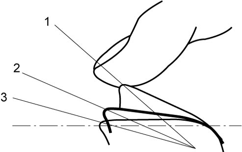

9E
| Power Window System Initialization / Reset (Front Driver Side Only) |
•Without initialization of power window system, auto operation and anti-pinching function will not work correctly. If the following items are carried out, make the main switch memorize the door glass position performing initialization.
—Replacing of door related parts such as power window regulator assembly, glass run, etc.
—Replacing of power window main switch
—Shutting off of electric power for power window main switch such as battery removal, etc.
•Do not pinch any object during the initialization. Doing so may spoil original performance in the power window system.—Replacing of power window main switch
—Shutting off of electric power for power window main switch such as battery removal, etc.
Initialization
1)Disconnect “P/W T” and “P/W” fuses with ignition “OFF”.
2)Pull up driver side power window main switch and hold it for about 15 seconds. With this holding operation, capacitor in power window main switch discharges electricity.
3)Reconnect “P/W T” and “P/W” fuses, and set ignition “ON”.
4)Lower driver side front door glass fully.
5)Pull up and hold driver seat side power window main switch in AUTO position until door glass is fully raised and continue holding it up for about 2 seconds.


 "Expand image")
| 1. | Auto-up | 3. | “OFF” |
| 2. | Manual up |
6)Perform auto-down and auto-up operating power window main switch to check that door glass is lowered and raised fully. Repeat procedure from Step 1) if auto-down or auto-up function does not work.
7)Check anti-pinching function.